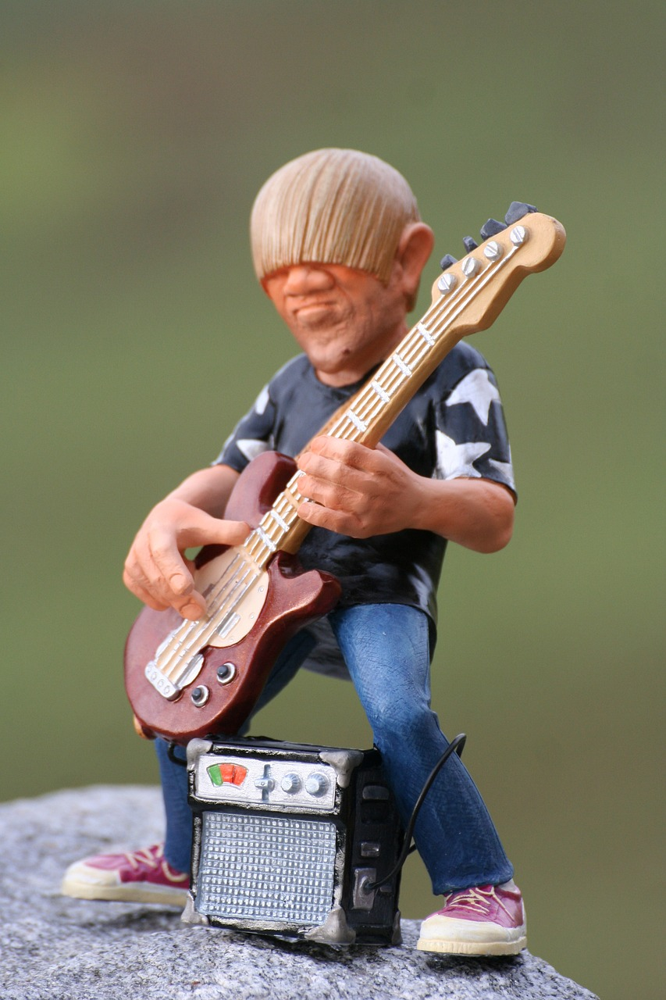

The Generics, a band comprising three talented individuals, embark on an inspiring journey in the challenging realm of the music industry. Bound by their shared passion for creating captivating melodies and heartfelt lyrics, these determined musicians pour their souls into crafting a unique sound that resonates with audiences far and wide.
With unwavering commitment, the members of The Generics strive to defy the stereotypes often associated with their band name. Each member brings a distinct flavor to their music, blending their diverse influences and musical backgrounds into a harmonious whole. The lead vocalist mesmerizes listeners with his soulful voice, effortlessly conveying raw emotions and evoking a spectrum of feelings. The guitarist weaves intricate melodies, skillfully infusing the music with captivating riffs and memorable hooks. Meanwhile, the drummer drives the rhythm, providing the backbone that propels their songs forward with infectious energy.
Their journey is not without its challenges. The Generics face countless late-night rehearsals, gigging at small venues to gain exposure, and tirelessly honing their craft. Despite the setbacks and the occasional doubts that plague their minds, their unwavering belief in their music keeps them pushing forward. They understand that success in the music industry requires perseverance, resilience, and an unyielding dedication to their art.
Through their heartfelt lyrics, The Generics explore the complexities of human emotions, delving into themes of love, loss, self-discovery, and the universal experiences that bind us all. Their music acts as a conduit, connecting with listeners on a deep level, and leaving an indelible mark on their souls. As The Generics continue to pour their hearts into every note, every lyric, and every performance, they remain steadfast in their pursuit of their musical dreams. With an unwavering spirit and a shared vision, these three individuals forge ahead, striving to leave an everlasting impression in the vast tapestry of the music industry. The Generics are poised to make their mark, one unforgettable melody at a time.